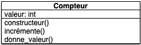

Coder ses objets
Exemple complet d'utilisation de vscode pour créer des objets en python en prenant pour exemple les objets et les classes crées lors du cours classes et objets.
Création du projet
On suit les directives du projet pourcentages pour créer un nouveau projet :
- on crée un dossier
coder-objetsdans un explorateur de fichier - on ouvre le dossier
coder-objetsavec vscode, ce qui crée notre projet - on crée un nouveau fichier
main.pyoù l'on écritprint("hello world !")
Exécution du projet
- assurez vous d'être dans l'onglet contenant le fichier
main.pyde vscode - cliquez sur le triangle en haut à droite de la fenêtre pour exécuter le programme.
Vous devriez obtenir quelque chose du genre :

Lisez le tutorial vsc et python pour en savoir plus sur l'exécution de programmes python avec vscode.
Coder ses objets : le compteur
Nous allons reprendre l'exemple du cours classes et objets, avec le compteur. On sait que l'on veut arriver à la modélisation UML suivante :

On va coder petit à petit la classe.
Préparation du projet
Notre projet est pour l'instant organisé de cette manière :
coder-objets
└── main.py
Nous allons avoir besoin d'un objet Compteur donc :
- on crée un fichier un fichier
compteur.pydans notre projet - on crée la classe
Compteurla plus petite possible - on importe et on crée un objet de classe
Compteurdans le programme principal
classe Compteur minimale
Fichier compteur.py :
class Compteur:
pass
Conventions
- les noms de classe commencent par une majuscule
- l'implémentation de la classe est placée dans un fichier de même nom mais avec une minuscule
On a utilisé l'instruction pass qui ne fait rien. Nous l’utilisons ici car la définition d'une classe crée un bloc (il y a un :) et que tout bloc doit contenir une instruction.
création d'un objet dans le programme principal
Fichier main.py :
from compteur import Compteur
c = Compteur()
Lorsque l'on exécute le programme main.py il ne se passe rien. C'est une bonne nouvelle ! Ca signifie que notre programme n'a pas d'erreur et qu'un objet a bien été créé.
Convertir notre essai en test
Lorsque l'on programme, on fait constamment des tests pour vérifier que le programme fonctionne. Lorsque notre programme grossi, on a tendance à ne tester que les nouvelles fonctionnalités et non pas de vérifier que les anciennes fonctionnent toujours.
De plus, on a souvent oublié commet on avait fait pour tester nos anciennes fonctionnalités. C'est bête ! Autant garder nos tests pour pouvoir les exécuter à chaque modification de code.
Enfin, un programme informatique (en vrai, pas en TD où il ne dure que 2h) n'est jamais fini. On va travailler à ce programme pendant des semaines, voir des mois et pour certains des années. On ne peux donc pas :
- décider au départ tout ce qu'on va coder puis stopper le développement.
- coder chaque classe indépendamment des autres. Le code d'une classe va influer sur le code d'une autre
Les deux points ci-dessus impliquent que :
- il faut retester les classes déjà écrites lorsque l'on en code de nouvelles à cause des effets de bords possibles
- il faut parfois modifier des classes que l'on a écrite précédemment et donc il faut retester toutes leurs fonctionnalités.
- tester ses classes est une nécessité
- il faut conserver ses tests pour ne pas avoir à les re-écrire à chaque fois
Pour arriver à ce résultat, nous allons utiliser la boucle de programmation suivante :
- on code une petite fonctionnalité
- on vérifie dans le programme principale ou dans un programme principal de test que cette fonctionnalité fonctionne
- on convertit cette vérification en test que l'on conserve
Pour l'instant, on crée un objet et on en fait rien. Vérifions qu'il est bien de la bonne classe, Compteur :
Fichier main.py :
from compteur import Compteur
c = Compteur()
print(type(c))
En exécutant le fichier main, on obtient :
» python main.py
<class 'compteur.Compteur'>
C'est de la classe Compteur. Améliorons notre vérification en utilisant la fonction python isinstance.
Une instance d'une classe est un objet de celle-ci.
Les termes objets et instance sont donc équivalents.
Fichier main.py :
from compteur import Compteur
c = Compteur()
print(isinstance(c, Compteur))
En exécutant le fichier main dans le terminal, j'obtiens :
» /usr/local/bin/python3 main.py
True
Notre vérification est juste :
- notre vérification rend
Truesi l'objet crée est de la classe compteur - notre vérification rend
Falsesinon
Ne confondez pas Compteur, la classe et Compteur() qui est le résultat de l'exécution de la classe, c'est à dire un objet.
Maintenant que notre vérification est transformée en quelque chose qui doit True ou False, on peut la transformer en un test. Pour cela on crée un fichier test_compteur.py qui retranscrit notre vérification:
Fichier test_compteur.py :
from compteur import Compteur
def test_constructeur():
c = Compteur()
assert isinstance(c, Compteur)
Exécutez les tests de votre projet et vérifier que le test passe bien.
A la fin de cette partie, notre projet ressemble à :
coder-objets
├── compteur.py
├── main.py
└── test_compteur.py
Coder l'attribut valeur
Maintenant qu'on est assuré que l'on peut créer des objets, on peut améliorer les fonctionnalités de notre compteur (c'est facile, pour l'instant il ne fait rien). On décide de commencer par ajouter l'attribut valeur et son accesseur donne_valeur()
On utilise la boucle de programmation vue précédemment :
- on code une petite fonctionnalité
- on vérifie dans le programme principale ou dans un programme principal de test que cette fonctionnalité fonctionne
- on convertit cette vérification en test que l'on conserve
Donc dans notre cas :
Coder l'attribut
Fichier compteur.py :
class Compteur:
def __init__(self):
self.valeur = 0
Vérification du fonctionnement de l'attribut
Fichier main.py :
from compteur import Compteur
c = Compteur()
print(c.valeur)
puis, une fois que tout marche :
from compteur import Compteur
c = Compteur()
print(c.valeur == 0)
bonne pratique
Lorsque l'on teste un objets et ses méthodes, on essaie dans la mesure du possible de ne pas avoir besoin des attributs de classes. On ne vérifie que les résultats de la méthode, pas comment l'objet stocke ses informations.
On teste des fonctionnalités pas une implémentation particulière de celles-ci.
Test de la fonctionnalité
On ajoute le test à notre fichier de test, pour avoir :
Fichier test_compteur.py :
from compteur import Compteur
def test_constructeur():
c = Compteur()
assert isinstance(c, Compteur)
def test_valeur_initiale():
c = Compteur()
assert c.valeur == 0
On ne supprime pas d'anciens tests, sinon on perd tout les bénéfices de programmer des tests.
Exécutez les tests pour votre projet et vérifiez que tout fonctionne.
L'exécution des tests via le terminal donne alors :
» /usr/local/bin/python3 -m pytest
========================================================== test session starts ===========================================================
platform darwin -- Python 3.9.13, pytest-6.2.5, py-1.10.0, pluggy-1.0.0
rootdir: /Users/fbrucker/Documents/sous_git/cours_informatique/docs/src/cours/algorithme-code-théorie/code/programmation-objet/coder-ses-objets/coder-objets
plugins: dash-1.19.0, cov-3.0.0
collected 2 items
test_compteur.py .. [100%]
=========================================================== 2 passed in 0.02s ============================================================
Les deux tests sont passés.
Coder incrémente incrémente
On procède de la même manière pour incrémente.
Code de la méthode incrémente
Fichier compteur.py :
class Compteur:
def __init__(self):
self.valeur = 0
def incrémente(self):
self.valeur += 1
Vérification du fonctionnement de la méthode
Fichier compteur.py :
from compteur import Compteur
c = Compteur()
c.incrémente()
print(c.valeur)
c.incrémente()
print(c.valeur)
On a mis deux appels à la méthode incrémente, car si on ne garde qu'une unique vérification, on est pas assuré que la valeur incrémente (self.valeur = 1 plutôt que self.valeur += 1 dans le code de la méthode par exemple).
Ajout des tests
Fichier test_compteur.py :
from compteur import Compteur
def test_constructeur():
c = Compteur()
assert isinstance(c, Compteur)
def test_valeur_initiale():
c = Compteur()
assert c.valeur == 0
def test_incrémente():
c = Compteur()
c.incrémente()
assert c.valeur == 1
c.incrémente()
assert c.valeur == 2
Chaque test doit être indépendant, on recrée donc notre objet à chaque test.
Chaque test ne doit pas dépendre d'autre chose que lui même. Il ne dot pas dépendre de variables extérieure au test.
Exécutez les tests pour votre projet et vérifiez que tout fonctionne.
Améliorer ses objets
Le compteur avec paramètres
Créer des tests en ajoutant les paramètres par défaut de la construction de l'objet du cours. Cela vous entraînera à modifier des méthodes puis à mettre en concordance les tests.
Comparer des compteurs
Créer des tests en ajoutant les opérations de comparaison (strictement plus grand, strictement plus petit et égal) du cours. Cela vous entraînera à modifier des méthodes puis à mettre en concordance les tests.